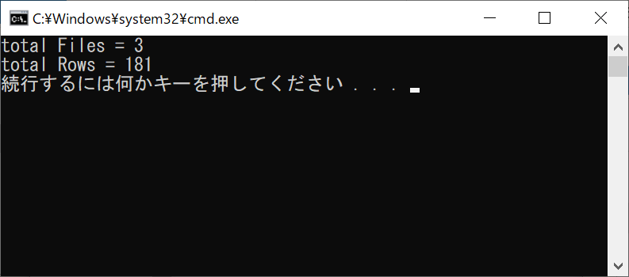

メモ：cmd ファイルの行を取得する
コマンドプロンプト / バッチファイル
作成したプログラムのファイル数と行数を調べる機会があり、
手動では大変なので、バッチファイルを試してみた
フォルダ内（サブフォルダを含む）の指定した拡張子の全ファイルの、
ファイル数と行数の合計を求めるバッチファイルを作成したのでその覚え書き
test.txt
作成方法
コマンドのテキストを作成し、拡張子を「.bat」にして保存すればバッチファイルになる
今回は上記テキストを test.bat として保存
実行方法
コマンドプロンプトで、カレントディレクトリに対象のバッチファイルがあれば、
１・ファイル名.bat + Enter で実行される
２・ファイル名 + Enter でも実行できる
絶対パスか相対パスで呼び出せば、どこのファイルでも実行できる
（実行はファイルの配置場所起点なので、コマンドに相対参照があった場合は注意）
コマンドプロンプトを開かなくても、エクスプローラーで直にバッチファイルをダブルクリックしても実行できる
バッチファイルでバッチファイルを呼び出すことも可能なよう
test.bat をダブルクリックする

コマンドプロンプトが自動的に立ち上がり実行される

バッチファイルに記載したとおりに、条件にあったファイル数とその行の合計数が表示されている
pause を記載しているので、何か押されるまで待機している
何かを押すと、自動的にコマンドプロンプトが終了される
コマンドについて
| コマンド | メモ |
|---|
@echo off | 経過を表示しない |
|---|
rem | コメントアウト |
|---|
set |
環境変数の参照/設定/削除
| 書式 | set 変数名=値 |
|---|
%変数名% | 変数の参照は、「%」 で挟む |
|---|
/a | 計算時のオプション |
|---|
|
|---|
for |
ループ
| 書式 | for "オプション" %%変数 in ("条件式") do コマンド
変数はアルファベット１文字 |
|---|
/f | ファイル内容を1行ずつ読み込むオプション |
|---|
%%変数 | バッチファイルに記載する時は
変数は記載・参照共に "%%" は２つ |
|---|
%変数 | コマンドプロンプトに直に記載する時は
変数は記載・参照共に "%" は１つ |
|---|
(' コマンド ') | 条件式にコマンドを使う場合は
「 ' 」 (クォーテーション)で挟む |
|---|
do ( コマンド
コマンド ) | do の後に()をつけると
コマンドを複数行に分けて記述できる |
|---|
('… ^| …') |
条件式のコマンドに「|」を使う場合
「^」を付ける必要がある |
|---|
|
|---|
dir | ファイルやフォルダの一覧を出力
/a-d | ディレクトリを除いて出力 |
|---|
/b | 見出/要約を除く、ファイルパスだけを出力 |
|---|
/s | サブディレクトリも含めて検索 |
|---|
|
|---|
find | ファイル内の文字列検索
| 書式 | find 'オプション' "検索条件" 検索対象のパス |
|---|
/c | マッチする行数を出力 |
|---|
/v | マッチしない行数を出力 |
|---|
/c /v | 総行数を出力 |
|---|
"" | 検索条件（ "" は空文字列を指定） |
|---|
|
|---|
echo | 文字列の出力
| 書式 | echo 出力内容 |
|---|
内容 > file.txt | ファイル新規作成 or 上書き |
|---|
内容 >> file.txt | ファイル新規作成 or 追記 |
|---|
|
|---|
type | ファイルの内容を出力 |
|---|
pause | 何かキーが押されるまで待機 |
|---|
exit | 終了
| 書式 | exit "オプション" "エラーコード" |
|---|
/b | バッチプログラムのみの終了 |
|---|
0 | エラーなし |
|---|
|
|---|
| | パイプ コマンドの出力を別のコマンドの入力として渡す |
|---|
^ |
ハット記号(サーカムフレックス; カレットとも)
エスケープ コマンド途中での改行などに使える |
|---|
Linuxコマンドより扱いが難しいかも
バッチファイルとコマンドプロンプトへの記載で微妙に記載法が違ったり、
変数へのコマンド出力の代入にfor文を使わなくてはならないなど、
作法に少し戸惑う
参考になったサイト